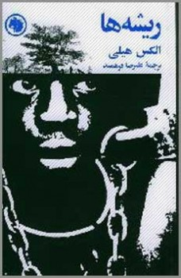

تست قلم
پرستو
این مطلب یک کپی از این
صفحه
برای آزمایش فونت پرستو میباشد.
ریشه ها Roots: The Saga of an American Family نوشته ی الکس هیلی ترجمه علیرضا فرهمند کتابهای جیبی انتشارات امیرکبیر
|
 |
هنگامیکه الکس هیلی بچه بود و در تنسی می زیست ، مادربزرگش اغلب داستانهایی برای او تعریف می کرد ، داستانهایی که به هفت نسل پیش از الکس ، و به جد او برمی گشت که لقب "آفریقایی" را داشت . مادربزرگ می گفت ، "آن مرد ، که در آنسوی اقیانوس و در دره ی رودی به نام "کامبی بولونگو" می زیسته ، روزی به جنگل رفته بود تا تنه ی درختی را بکند و برای خود طبل بسازد . در آنجا ، چهار مرد به او حمله کردند ، کتکش زدند ، به زنجیرش کشیدند و او را به کشتی پر از برده ای بردند که به آمریکا می رفت ."
الکس هیلی ، تا زمانی که به سن جوانی رسید و نویسنده شد ، همچنان خاطره ای بسیار زنده از قصه های مادربزرگ داشت . از این رو تصمیم گرفت به جستجو و کاوش بپردازد تا درستی این قصه ها را اثبات کند.
در عرض دوازده سال ، تقریباً ششصدهزار کیلومتر را در سه قاره ی جهان پیمود ، و سرانجام نه تنها موفق شد نام اصلی "افریقایی" را ،که جدّ هفتم او بود (و کونتا کینته نامیده میشد) پیدا کند ، بلکه حتی محل دقیق زندگی او را پیدا کرد، که دهکده ی ژوفوره در گامبیاست . کونتا کینته را در سال ۱۷۶۷ از این محل ربودند و به مریلند امریکا بردند و به یک کشاورز ویریجینیا فروختند.
الکس هیلی ، در جریان پژوهش های خود، در ۲۹ سپتامبر ۱۹۶۷ به بندر آناپولیس رفت که درست دویست سال پیش ، کونتا کینته (همراه ۳۲۶۵ دندان فیل ، ۱۸۵۰ کیلو موم ، ۴۰۰ کیلو پنبه ، ۳۲ اونس طلا و ۹۸ برده ی دیگر) در آن پیاده شده بود . و بدینگونه بصورت جدّ شش نسل سیاه "امریکایی" درآمده بود که به فعالیت های زیر اشتغال داشتند :
باربر ، آهنگر ، چوب فروش ، پیش خدمت قطار ، وکیل دعاوی ، مهندس معمار و سرانجام نویسنده ی کتاب ریشه ها .
اما ریشه ها از یک قصه سی خانوادگی فراتر می رود . سرگذشت ۲۵ میلیون سیاه امریکایی را بازگو می کند و به آنان هویت و میراثی فرهنگی را پس می دهد که بردگی از آنان گرفته بود . از این گذشته ، مخاطب کتاب نه فقط سیاهان و سفیدا ، بلکه مردم همه ی کشورها و همه ی نژادها هستند . زیرا داستانی که هیلی تعریف می کند ، گویاترین شاهد نیروی شکست ناپذیر و رام نشدنی روح انسان است . (متن پشت جلد کتاب ریشه ها)
************
بخش اول کتاب ریشه ها توصیف بسیار عالی زندگی بومیان افریقاییِ . شرح تولد و زندگی کونتا کینته و شرح آداب و رسوم بدوی و مذهبی بومیانی مسلمان در دهکده ای به نام ژوفوره . و بعد قصه ی پر غصه ی دزدیده شدن و اسارت و بردگی ؛ شکنجه و فروخته شدن و فرار و بردگی چند نسل بعد کونتا . تا جنگ های داخلی امریکا(جنگ شمال و جنوب) و الغای بردگی .(اما جنگ داخلی ، به عقیده ی بسیاری از تاریخ نویسان ،الغای بردگی نبود . در جنوب که نیمه مستعمره ی شمال بود ، برده داران بزرگ رفته رفته قدرت نگران کننده ای پیدا کرده بودند و شمال می بایست استیلای خود را تثبیت کند . جنگ با پیروزی شمال پایان یافت و الغای بردگی محصول فرعی آن بود . این را نیز باید گفت که مخالفت اخلاقی با بردگی از هنگامی آغاز شد که زیان برده داری در بسیاری از نقاط بیش از سود آن شد و افزایش تعداد بردگان به جای خطرناکی رسیده و شورش بردگان ، سفید ها را متوحش کرده بود .از مقدمه ی مترجم) تا زمان حال و شرح حال خود الکس هیلی برای جمع آوری مستندات کتابش.
بخشهای برگزیده ی کتاب:
************
پ ن: اول که مقدمه ی نویسنده رو خوندم پیش خودم گفتم ، کاش مقدمه رو نمی خوندم ! به نظرم خلاصه ی کتاب تو مقدمه تعریف شده بود و این موضوع شاید از جذابیت های خوندن کتاب کم می کرد . ولی در آخر از اینکه شِمای کلی از قصه رو اول خونده بودم ناراضی نبودم !